Supercook
Búsqueda de recetas a partir de los ingredientes disponibles.
Enfoque · IngredientesTaller UX · Accesibilidad · Inteligencia Artificial
Benchmark de experiencias de recetas para identificar evidencia, patrones y oportunidades de diseño para RecetApp.
Explorar criterios01 / Muestra
La selección permite observar distintos enfoques de búsqueda, comunidad y presentación de recetas.
Búsqueda de recetas a partir de los ingredientes disponibles.
Enfoque · IngredientesRecetas compartidas por una comunidad amplia de usuarios.
Enfoque · ComunidadRecetas de alta calidad visual, técnicas culinarias y suscripción.
Enfoque · Contenido visual02 / Evaluación
Completar cada celda con observaciones comprobables y su evidencia. Lo no observado queda explícitamente pendiente.
| Criterio | Supercook | Cookpad | Gronda |
|---|---|---|---|
| Funcionalidades | Permite activar micrófono, cargar ingredientes manualmente, usar categorías de despensa, sugerir recetas según disponibilidad del usuario y gestionar una lista de compras simple. | Permite buscar recetas por texto, explorar contenido comunitario, guardar recetas en recetario, comentar, seguir usuarios, subir Cooksnap, usar calendario de recetas y acceder a una comunidad activa. | Permite explorar un feed de recetas, filtrar por complejidad, tipo de plato, técnica, tiempo y dieta, ajustar porciones, usar asistente "Ask AI", guardar notas privadas y seguir chefs. |
| Flexibilidad | Alta para ingredientes disponibles. Recomendaciones según stock doméstico y variantes si faltan ingredientes. No incluye filtro de presupuesto ni cálculo económico. | Media. El usuario puede buscar recetas con restricciones como "sin sal ni azúcar", pero no calcula faltantes ni recomienda según lo que ya tiene en casa. | Baja para el problema principal. No reordena recetas según ingredientes disponibles; la adaptación depende de la asistencia manual. |
| Claridad del flujo principal | Alta. 1 tap para activar micrófono, 1 tap para cerrar, 1 tap para "Ver recetas" y 1 tap para abrir la receta. | Alta. 1 tap en una categoría y 1 tap en una receta para llegar al contenido. | Alta. 2 taps para acceder a la receta desde el feed y lectura estructurada en video, perfil, cantidades y pasos. |
| Lenguaje | Directo y funcional. Texto principal: "Mi Despensa" y "Ver recetas". Disponible en muchos idiomas, incluido el español. | Claro, familiar y optimizado para búsquedas rápidas. Textos principales: "Lo más buscado", "Premium", "Recetario", "Plan", "Guardar" y "Comentar". | Formal y técnico. Uso de vocabulario culinario avanzado. Botón literal: "Ask AI". |
| Calidad de las propuestas | Buena para recetas prácticas según stock del hogar. Más orientada a soluciones cotidianas que a alta cocina. | Muy alta en volumen y diversidad. La comunidad genera una amplia variedad de recetas de todo tipo. | Alta en detalle visual y técnica, pero más orientada a cocina de autor y preparaciones especializadas. |
| Cómo llega el usuario | App Store móvil. Acceso gratuito y sencillo. | App Store móvil. Muy popular y muy difundida por comunidad y visibilidad. | App Store / Google Play. La captación se apoya en publicidad digital y chefs influyentes. |
| Interfaz de usuario | Funcional, pero visualmente desactualizada; botones muy pegados a los bordes del dispositivo. | Simple y accesible, con una estructura clara. Visualmente básica, pero funcional. | Más pulida, con jerarquía clara, pantallas ordenadas y énfasis en contenido audiovisual. |
| Estados del sistema | Muy liviana. Casi no hay tiempos de espera relevantes. | Fluida y rápida. No aparecen tiempos de espera importantes en el recorrido principal. | Respuesta inmediata al cambiar porciones y estado visible del asistente "Ask AI". |
| Accesibilidad | Buena para principiantes; carga por voz ayuda a usuarios con poca experiencia. El diseño visual es menos sólido en bordes y controles. | Buen nivel general de uso, con textos directos. No se observó un foco específico en accesibilidad avanzada. | Buena claridad visual general, pero complejidad léxica y contenido especializado reducen accesibilidad para usuarios menos expertos. |
| Modelo de negocio | Gratis. Sin publicidad visible ni barrera comercial en el flujo principal. | Gratuita con acceso a funciones premium. Premium por 1,49 USD/mes. | Suscripción con prueba gratuita de 7 días. Bloquea recetas Pro y acceso a "Ask AI". |
| Cobertura y alcance | Muy relevante para el problema doméstico. Cubre categorías de ingredientes y despensa. | Muy alta. Hay recetas de todo tipo, con mucha variedad regional y temática. | Alta en cocina técnica y visual, pero menor cobertura para recetas cotidianas básicas. |
| Fortalezas observadas | Entrada por voz, inventario doméstico, recetas según stock disponible y lista de compras. | Volumen, comunidad, variedad, búsqueda rápida y flujo de receta muy directo. | Jerarquía visual, video introductorio, ajuste de porciones, contenido de alta calidad y asistente IA. |
| Fricciones observadas | Interfaz visual desactualizada y botones inestables cerca del borde del dispositivo. | No considera ingredientes disponibles ni faltantes; la compra no se calcula. | No resuelve despensa ni lista de compras; catálogo centrado en cocina de autor y técnica. |
En celular, desplazá la tabla horizontalmente para consultar las tres aplicaciones.
03 / Supercook
Enfoque en recetas a partir de ingredientes disponibles y flujo muy directo para resolver la falta de ideas domésticas.
La app resuelve de forma clara la etapa de "qué tengo en casa". Su flujo principal es rápido, se apoya en micrófono y en categorías de ingredientes y permite migrar a una lista de compras simple. La fricción principal está en la experiencia visual: los controles quedan muy cerca de los bordes del dispositivo.
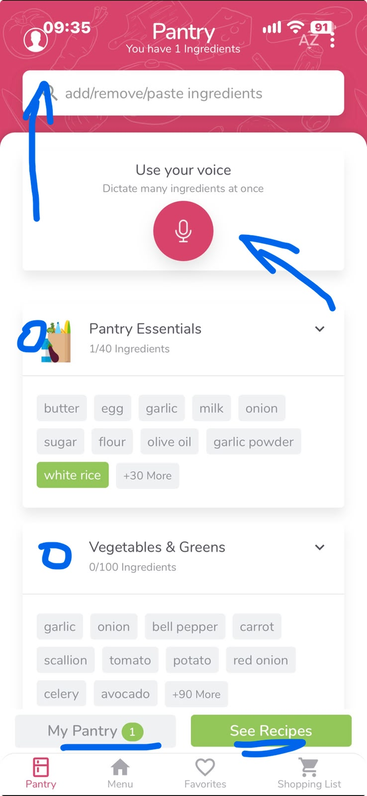
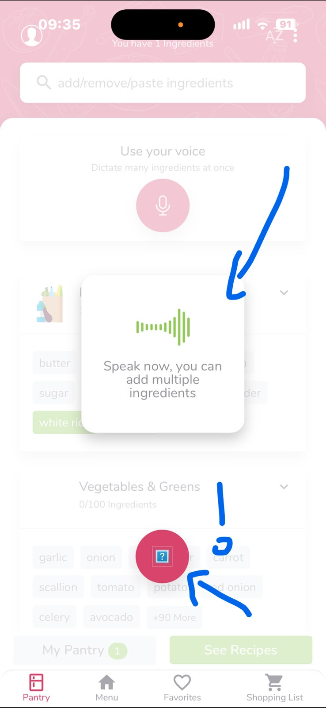
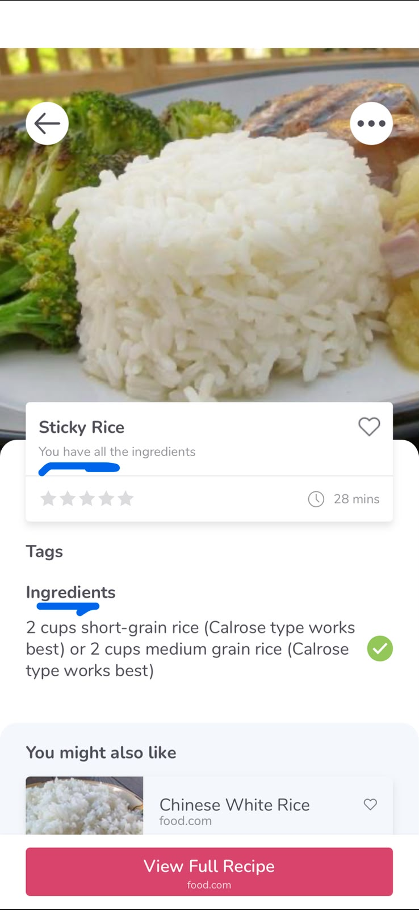
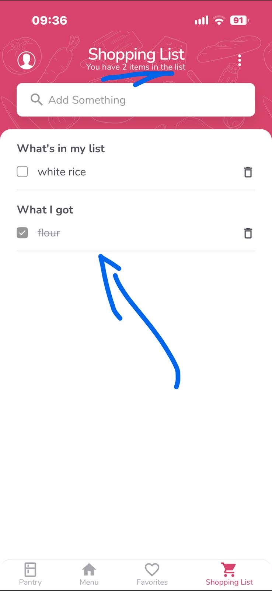
04 / Cookpad
Enfoque en comunidad, variedad de recetas y búsqueda rápida por ideas de cocina.
Cookpad funciona como un gran buscador de recetas con fuerte componente social. El flujo es muy simple y visualmente accesible, pero no está orientado a la gestión de ingredientes que el usuario ya tiene en la casa.
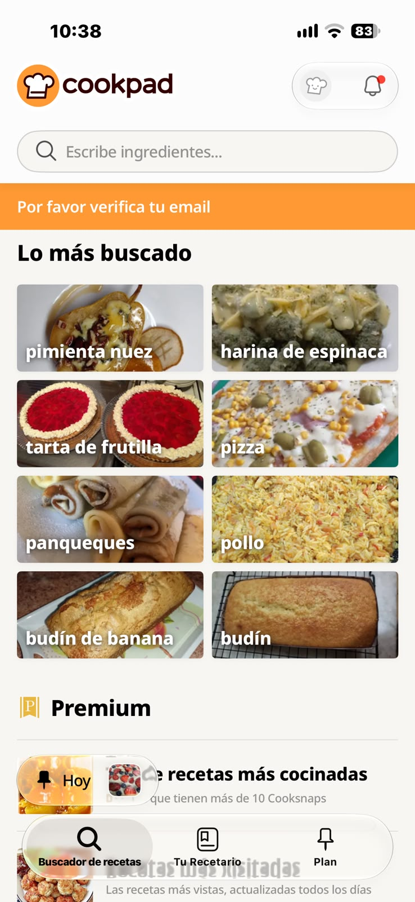
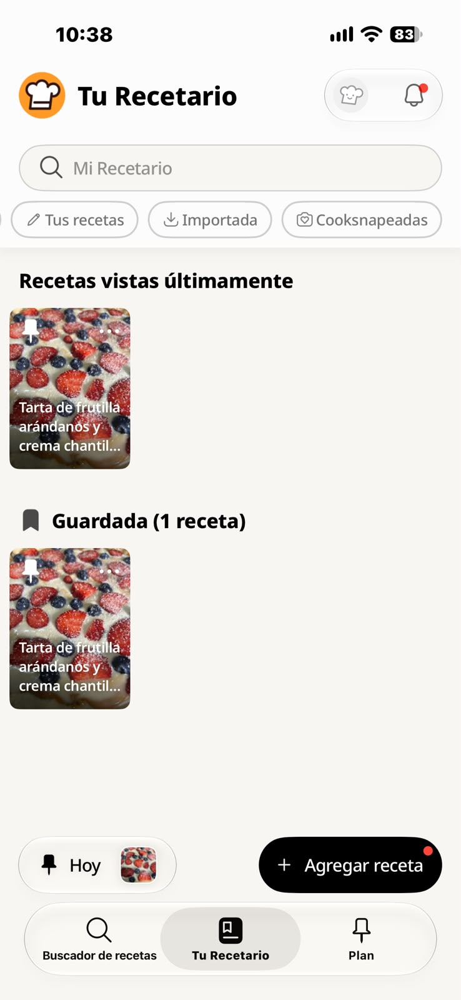
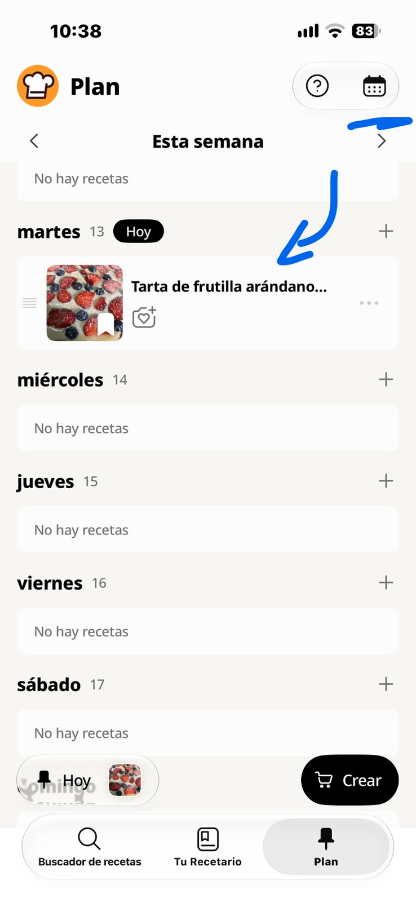
05 / Gronda
Enfoque en receta técnica, calidad visual y experiencia más premium orientada a cocina de autor.
Gronda es la app más sólida en estructura de receta, ajuste de porciones y contenido multimedia. Su principal debilidad para RecetApp es que no funciona como buscador inverso por ingredientes disponibles ni como generador de compra.
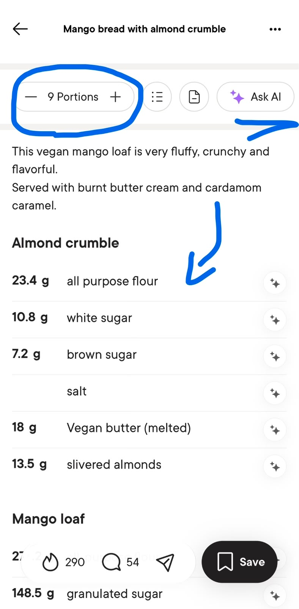
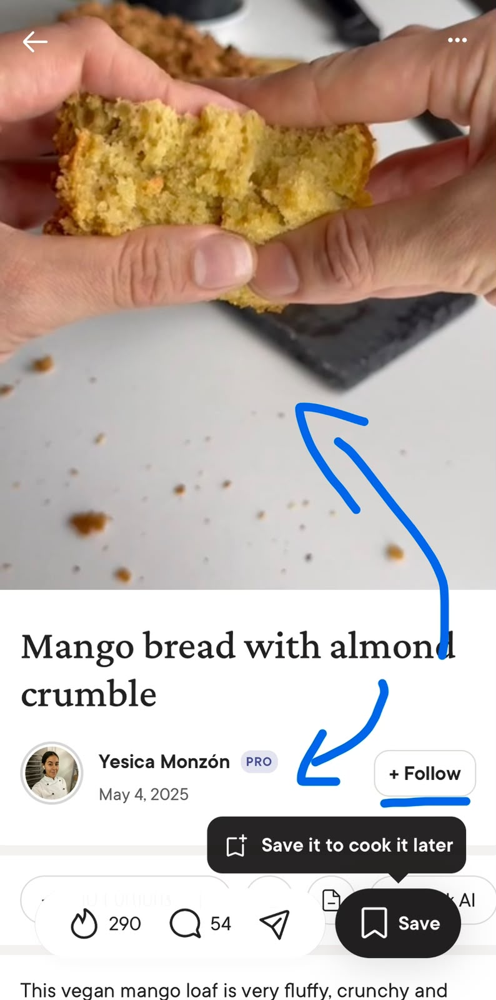
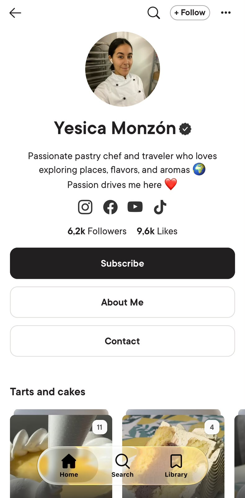
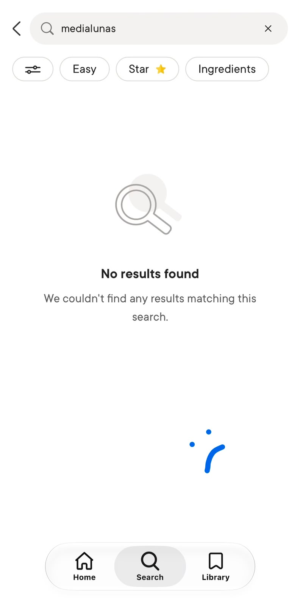
06 / Protocolo
El recorrido analizado focaliza la experiencia de una persona que intenta resolver: “¿qué puedo cocinar con lo que tengo?” y luego “¿qué me falta comprar?”.
Se registran dispositivo, sistema, idioma y punto de entrada de la app.
Se registran taps, textos de interfaz, tiempos de espera y estados del sistema.
Se asocian capturas a cada hallazgo para separar observación de inferencia.
07 / Síntesis
La búsqueda por ingredientes, la variedad de contenido y la estructura clara de receta son patrones útiles para la propuesta.
No existen listas de compras claras ni lógica de inventario en la mayoría de las apps analizadas. Algunas tienen interfaces menos claras o desactualizadas.
RecetApp debe combinar inventario, recomendación y compra en un solo flujo, con claridad visual y baja fricción para el usuario.
08 / Conclusiones generales
La mayoría de las apps logra un flujo de entrada rápido, muestra recetas con imágenes atractivas y organiza la información con claridad. Además, ofrecen una gran variedad de contenido y permiten guardar o seguir recetas de manera simple.
Las principales oportunidades están en la unión de inventario doméstico, recomendación de recetas y lista de compras. También se observa una ausencia fuerte de personalización según lo que el usuario ya tiene en casa y una menor atención a la claridad visual en algunos casos.